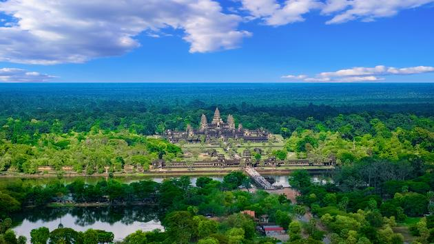
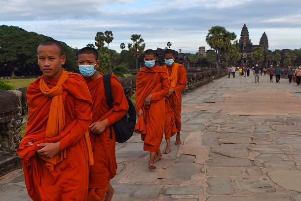
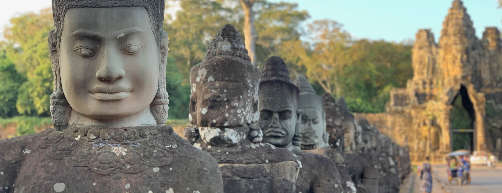
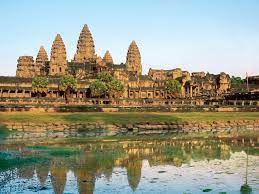

The sovereign state of Cambodia has a population of over 15 million. Buddhism is enshrined in the constitution as the official state religion, and is practised by more than 97% of the population.[9] Cambodia's minority groups include Vietnamese, Chinese, Chams and 30 hill tribes.[10] The capital and largest city is Phnom Penh, the political, economic and cultural centre of Cambodia. The kingdom is an elective constitutional monarchy with a monarch, currently Norodom Sihamoni, chosen by the Royal Council of the Throne as head of state. The head of government is the Prime Minister, currently Hun Sen, the longest serving non-royal leader in Southeast Asia, ruling Cambodia since 1985.
In 802 AD, Jayavarman II declared himself king, uniting the warring Khmer princes of Chenla under the name "Kambuja".[11] This marked the beginning of the Khmer Empire, which flourished for over 600 years. The Indianised kingdom facilitated the spread of first Hinduism and then Buddhism to much of Southeast Asia and undertook many religious infrastructural projects throughout the region. Angkor Wat is the most famous of these structures and is designated as a World Heritage Site. In the fifteenth century, after the rebellion of Ayutthaya, which was formerly ruled by the Khmer Empire, Cambodia experienced the decline of power, while its neighbors Vietnam and Thailand grew stronger. In 1863, Cambodia became a protectorate of France, and later was incorporated into French Indochina of Southeast Asia.
Cambodia gained independence from France in 1953. The Vietnam War extended into the country in 1965 with the expansion of the Ho Chi Minh Trail and establishment of the Sihanouk Trail. This led to the US bombing of Cambodia from 1969 until 1973. Following the Cambodian coup of 1970 which installed the right-wing pro-US Khmer Republic, the deposed King Sihanouk gave his support to his former enemies, the Khmer Rouge led by Pol Pot. With the support of the monarchy and North Vietnam, the Khmer Rouge emerged as a major power, taking Phnom Penh in 1975. The Khmer Rouge then carried out the Cambodian genocide from 1975 until 1979, when they were ousted by Vietnam and the Vietnamese-backed People's Republic of Kampuchea, supported by the Soviet Union, in the Cambodian–Vietnamese War.